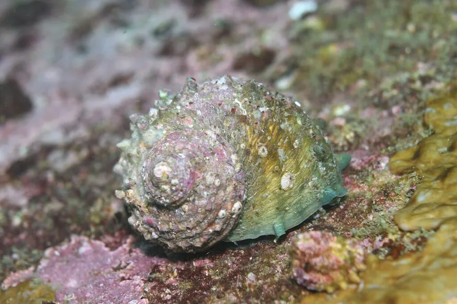

软体动物 · 动物界
角蝾螺 Turbo cornutus

壳面长着一圈圈尖角状突起的蝾螺，壳口圆而光滑，石灰质的厣厚重，生活在岩礁上刮食藻类，是常见的食用螺。
- 分类
- 门软体动物门纲腹足纲目原始腹足目科蝾螺科属蝾螺属
- 栖息环境
- 岩礁海岸的潮间带至水深数十米，喜浪击强烈的岩石表面
- 地理分布
- 西北太平洋，包括中国东南沿海、日本、朝鲜半岛和台湾
- 保护级别
- 尚无专门保护级别；为常见食用与工艺用螺
物种志
角蝾螺的贝壳呈圆锥形，壳高约八至十二厘米，壳面呈绿褐、灰褐或暗褐色，每一螺层上长着一圈尖角状的突起，螺肋粗大，壳口圆形，内面有珍珠光泽，口盖厚重，由石灰质构成，表面凸起。足部宽大，能吸在岩石上抵御浪击。它用齿舌刮食岩石上的藻类，是潮间带岩礁上常见的植食性螺类，幼体壳形较扁，成体后壳顶逐渐高起。
它分布于西北太平洋，包括中国东南沿海、日本、朝鲜半岛和台湾，栖息在岩礁海岸的潮间带至水深数十米，喜欢在浪击强烈、藻类繁茂的岩石表面活动，常成片聚集。它多在夜间和潮水上涨时取食，白天吸附在石缝里休息。繁殖期在夏季，雌雄异体，受精卵在海水中发育，幼体经浮游阶段后附着到礁石上。它肉味鲜美，壳可作装饰和工艺品，是中国南方沿海常见的食用螺，尚无专门保护级别。
形态与习性
- 食性用齿舌刮食岩石表面的藻类
- 壳高约八至十二厘米，壳面有尖角状突起
- 口盖石灰质，厚重且表面凸起
- 栖息深度潮间带至水深数十米的岩礁海岸
- 活动夜间和涨潮时取食，白天吸附石缝休息
- 利用肉可食，壳可作装饰和工艺品
趣味知识
- 角蝾螺每一层壳上都长着一圈尖角，像戴了一圈小皇冠。
- 它的口盖由石灰质构成，又厚又硬，吸附在岩石上时很难被掀下来。
- 壳口内面有珍珠光泽，古代常被磨制成纽扣和装饰片。